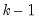
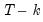
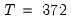
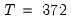
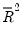
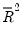

When you click OK in the dialog, EViews displays the equation window displaying the estimation output view (the examples in this chapter are obtained using the workfile “Basics.WF1”):
The t-statistic, which is computed as the ratio of an estimated coefficient to its standard error, is used to test the hypothesis that a coefficient is equal to zero. To interpret the
t-statistic, you should examine the probability of observing the
t-statistic given that the coefficient is equal to zero. This probability computation is described below.
The last column of the output shows the probability of drawing a t-statistic (or a
z-statistic) as extreme as the one actually observed, under the assumption that the errors are normally distributed, or that the estimated coefficients are asymptotically normally distributed.
This probability is also known as the p-value or the
marginal significance level. Given a
p-value, you can tell at a glance if you reject or accept the hypothesis that the true coefficient is zero against a two-sided alternative that it differs from zero. For example, if you are performing the test at the 5% significance level, a
p-value lower than 0.05 is taken as evidence to reject the null hypothesis of a zero coefficient. If you want to conduct a one-sided test, the appropriate probability is one-half that reported by EViews.
The p-values for
t-statistics are computed from a
t-distribution with

degrees of freedom. The
p-value for
z-statistics are computed using the standard normal distribution.
There are better tests for serial correlation. In “Testing for Serial Correlation”, we discuss the
Q-statistic, and the Breusch-Godfrey LM test, both of which provide a more general testing framework than the Durbin-Watson test.
The F-statistic reported in the regression output is from a test of the hypothesis that
all of the slope coefficients (excluding the constant, or intercept) in a regression are zero. For ordinary least squares models, the
F-statistic is computed as:
Under the null hypothesis with normally distributed errors, this statistic has an F-distribution with  numerator degrees of freedom and  denominator degrees of freedom.
The p-value given just below the
F-statistic, denoted
Prob(F-statistic), is the marginal significance level of the
F-test. If the
p-value is less than the significance level you are testing, say 0.05, you reject the null hypothesis that all slope coefficients are equal to zero. For the example above, the
p-value is essentially zero, so we reject the null hypothesis that all of the regression coefficients are zero. Note that the
F-test is a joint test so that even if all the
t-statistics are insignificant, the
F-statistic can be highly significant.
Note that since the F-statistic depends only on the sums-of-squared residuals of the estimated equation, it is not robust to heterogeneity or serial correlation. The use of robust estimators of the coefficient covariances (
“Robust Standard Errors”) will have no effect on the
F-statistic. If you do choose to employ robust covariance estimators, EViews will also report a robust Wald test statistic and
p-value for the hypothesis that all non-intercept coefficients are equal to zero.


 is a
is a  -dimensional vector containing observations on the dependent variable,
-dimensional vector containing observations on the dependent variable,  is a
is a  matrix of independent variables,
matrix of independent variables,  is a
is a  ‑vector of coefficients, and
‑vector of coefficients, and  is a
is a  ‑vector of disturbances.
‑vector of disturbances.  is the number of observations and
is the number of observations and  is the number of right-hand side regressors.
is the number of right-hand side regressors.  is log(M1),
is log(M1),  consists of three variables C, log(IP), and TB3, where  and
consists of three variables C, log(IP), and TB3, where  and  .
. are computed by the standard OLS formula:
are computed by the standard OLS formula: ) statistic measures the success of the regression in predicting the values of the dependent variable within the sample. In standard settings,
) statistic measures the success of the regression in predicting the values of the dependent variable within the sample. In standard settings,  may be interpreted as the fraction of the variance of the dependent variable explained by the independent variables. The statistic will equal one if the regression fits perfectly, and zero if it fits no better than the simple mean of the dependent variable. It can be negative for a number of reasons. For example, if the regression does not have an intercept or constant, if the regression contains coefficient restrictions, or if the estimation method is two-stage least squares or ARCH.
may be interpreted as the fraction of the variance of the dependent variable explained by the independent variables. The statistic will equal one if the regression fits perfectly, and zero if it fits no better than the simple mean of the dependent variable. It can be negative for a number of reasons. For example, if the regression does not have an intercept or constant, if the regression contains coefficient restrictions, or if the estimation method is two-stage least squares or ARCH. as:
as: is the mean of the dependent (left-hand) variable.
is the mean of the dependent (left-hand) variable.  as a measure of goodness of fit is that the
as a measure of goodness of fit is that the  will never decrease as you add more regressors. In the extreme case, you can always obtain an
will never decrease as you add more regressors. In the extreme case, you can always obtain an  of one if you include as many independent regressors as there are sample observations.
of one if you include as many independent regressors as there are sample observations.  , commonly denoted as , penalizes the
, commonly denoted as , penalizes the  for the addition of regressors which do not contribute to the explanatory power of the model. The adjusted
for the addition of regressors which do not contribute to the explanatory power of the model. The adjusted  is computed as:
is computed as: , can decrease as you add regressors, and for poorly fitting models, may be negative.
, can decrease as you add regressors, and for poorly fitting models, may be negative. are computed using the standard formulae:
are computed using the standard formulae: is the log likelihood (given by
is the log likelihood (given by  and
and